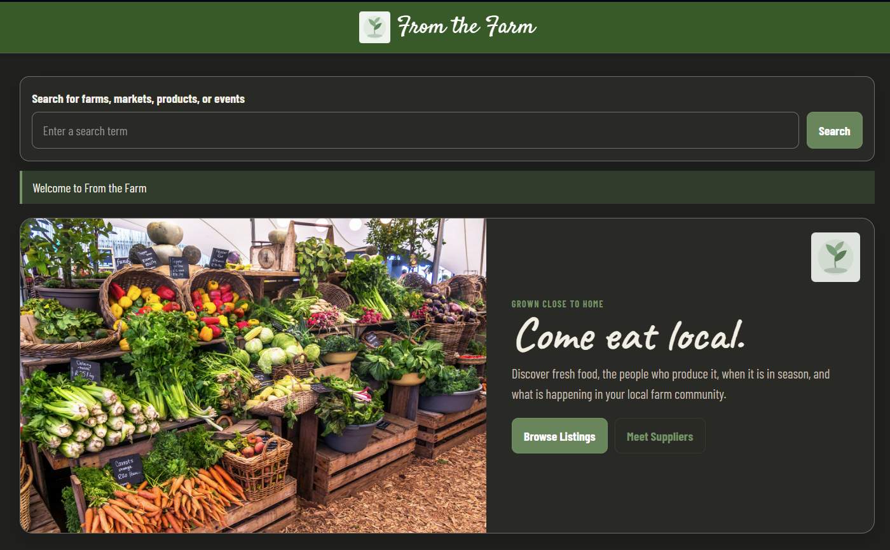

From the Farm
A supplier-discovery application built around local farms, farmers markets, and producers. The project focuses on practical search, map-based discovery, supplier profiles, and a friendly interface for connecting local producers with customers.